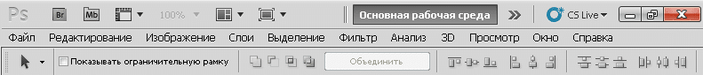

Пятая версия графического редактора простая и не требовательна к ресурсам. Программа уникальна, поскольку позволяет не только убирать различные дефекты, но и делать с изображениям различные оригинальные вещи. Предыдущий графический редактор фотошоп на русском бесплатно стал отличным помощником при построении графики но CS5 это еще более мощный инструмент. Не смотря на многообразие версий выпущенных редакторов, cs5 имеет не плохой спрос, наверное это связанно с тем что люди ознакомившись и наверно чуточку влюбившись в данную версию, не хотят менять не на что другое даже на новые версии.
Почему стоит скачать фотошоп CS5:
Лучшей базовой программой для веб-дизайнеров различных областей до сих пор является фотошоп CS5, который недавно получил свою новую модификацию. На данный момент он имеет не только характеристики начального приложения, но и обладает рядом заметных улучшений. CS5 открывает новые способы для обработки фотографий, может полноценно работать с трехмерными и многослойными изображениями высокого качества, предоставляя подробную информацию об обрабатываемых материалах.
Уникальная программа для работы с фото. C очередным созданным фото, мы часто замечаем некие дефекты на нем, будь это какие-то морщинки на лице, заваленный горизонт, в кадр попало что-то не нужно и т.п. подобное сразу же портит общий вид снимка, избавить от таких дефектов поможет программа фотошоп CS5.
{kind=link}
Внимание! Компания Adobe обновила версию графического редактора до версии Photoshop cs6 рекомендуем скачать бесплатно по ссылке бесплатную версию с полным набором функций на русском, сильно различий в функциях не увидите но стабильность работы будет на порядок выше.
Новые возможности фотошоп cs5
В программу были добавлены новые эффекты рисования, которые позволяют дизайнеру создавать реалистичные картины с имитацией структуры холста и красок, которые можно смешивать непосредственно на поле. Также стала доступна заливка фона с учетом содержания изображения, которая позволяет удалять некоторые элементы и заполнять пробелы с учетом наполнения окружающих областей.

Изменения коснулись и процесса обработки фотографий. Теперь работать над изображениями в формате RAW стало удобнее, так как появились современные инструменты редактирования. Например, удаление шумов не влияет на настройки цветов и общую четкость элементов. Кроме того, CS5 получил возможность обрабатывать изображения в формате HDR с исключительной точностью и скоростью.
Если есть проблема с русским языком смотрите на скрин ниже чтоб понять как изменить интерфейс на русский язык.

Советы по установке Photoshop cs5
Совет 1. После успешной установки официальной версии программы может не появится значок программы на рабочем столе, более того может и не быть папки в меню пуск, но не сомневайтесь программа установилась. Делаем следующее, заходим в мой компьютер и идем по пути где установлена программа обычно это C:\Program Files\Adobe\Adobe Photoshop CS5 находим файл с названием Photoshop.exe нажимаем правой кнопкой мыши на нем, находим пункт отправить -> на рабочий стол(создать ярлык).
Настоятельно рекомендуем посмотреть инструкцию по установке, установка немного не стандартная если рассматривать ее с пиратскими версиями. Если вы пользователь начального уровня после ознакомления с инструкциями все сразу будет понятно, есть как наглядное руководство с картинками так и видео инструкции.
Если вы не установили ключ лицензии в начале установки а выбрали ознакомительную версию, не беда, ознакомительная не значит урезанная по функционалу, после можно активировать одним из двух способов и пользоваться бесконечно.
- Как установить Photoshop CS5 бесплатно (полная инструкция)
- Серийный номер и активация для Adobe Photoshop CS5 (работает)
После установки активируйте серийным номером, или файлом активации!
Скачать Adobe Photoshop CS5 бесплатно:
Данная версия официальная, ничего не вырезано, без лагов, без каких то либо модификаций со стороны, легко активируется бесплатно, все работает стабильно и не вылетает.
Скачать бесплатно фотошоп CS5
Размер файла: 1.01 Гбcкачать .torrent файл ↓
Размер файла: 1.01 Гб
| Файл Amtlib.dll для CS5 x32 | Файл Amtlib.dll для CS5 x64 |
 |
 |
- Файл Amtlib.dll это файл активации программы
- Если использовать Amtlib.dll cs5 будет работать всегда бесплатно.
Активированная версия это выбор для тех кто не боится скачивать через торренты пиратские версии программ. В основном модифицированные версии блокируются антивирусами из за этого многие пользователи боятся качать что либо торрентами и этот страх можно понять. Версия с ключом весит мало из за того что многие дополнения вырезаны в целях экономии пространства, по этому программа может давать сбои.
Скачать Adobe photoshop cs5 активированный
(Вес: от 60 до 180 Mb)
Adobe Photoshop cs5 скачать торрент
Не редки случаи когда в активированной торрент версии программы Фотошоп cs5 случаются сбои и вылеты, будьте внимательны, мы советуем скачивать оригинальную версию и самим ее активировать бесплатно.
всё нормально пока, дольше посмотрим молодцы.
незнаю какой он но видел его в работе замена фона крутой ща скачаю проверю как он работает
а на вин 7 пойдёт
ОНА ДЛЯ СЕМЕРКИ И СОЗДАНА (В ОСНОВНОМ)
Скажите пожалуйста, активированная версия такая же, как и официальная? Просто она намного меньше весит…
а нужно какие нибудь дополнительные программы скачивать чтоб разархивировать файл?
winrar или 7z в общем стандартный архиватор
большое спасибо!!!
А на Win10 пойдет?
да
Она мало весит??
читайте все написано
Класс!!!! Спасибо огромное!!! Все понятно и подробно)))) самая классная программа!!!!
Программа подойдет для Windows 8?
да
мне понравилось хорошее
У меня все чики пуки
Спасибо! Качаю официальную версию.
Я так понимаю, она без ключа?
активатор отдельно скачивается
А эта программа не подходит к «MacBook Air»?
Скачала активированную версию, фотошоп сразу запустился, все работало. когда закрыла, не смогла найти ни ярлык, ни саму программу. как ее теперь запускать??
в папке куда установили
В какой папке? После установки ничего не осталось.
ЗАЙТИ В РАБОЧИЙ СТВОЛ НАЖАТЬ ЗАГРУЗКИ
Раскрыть архив комментариев (вопросы-ответы)
надо для меня
Добрый день, вот меня беспокоят вопросы:
1) Он с вирусами?
2) подойдет он на любой Windows?
3) И последний вопрос,ОН ПЛАТНЫЙ!?
по комментариям программа хорошая, долго мечтала о ней)
Он бесплатный
1 Без вирусов
2 Пойдет на любой Windows начиная с 7
3 Он бесплатный
для мак бука подойдет программа?
Пользуюсь давно и пока все устраивает. Скрин поможет сменить язык. Нужно просто перезайти в программу.
=D Я рад
не переводит на русский язык, делала всё по вашему скрину и все равно никак не переводит. помогите. заранее спасибо
Просто выйди и зайди снова. Я тоже так сделала и все вышло.
хатя нет я всётаки нашла где качать..
хмм!да но где-жеш тут скачать это
Здравствуйте меня зовут Милана Сергеева можете помочь.Я не знаю как скачать помогите мне пожалуйста
все достаточно просто не знаю что обьяснять
спасибоо
суперррр
а там есть инструмент «раскройка»?
Пока что хорошо , скачиваю
скачал все работает буду изучать ошибка была 6 запустил от администратора и все тип топ
ага
77
klass
Как установить?
У меня не получается.
Внимательнее и все получится
Какой серийный номер
там есть несколько способов активации смотрите ссылки на этой странице
Здравствуйте. Почему во время работы в фотошопе не отображается фото? Я открываю файл, но вместо него вижу черный экран. Что делать? Пробовала переустанавливать два раза, но ничего не изменилось.
Пограмма здесь не причом. Это комп
Сейчас скачиваю , может получиться)
Что делать ошибка 6
normal
Я давно ищу хороший фотошоп, без вирусов, без триала, скажите я вирусов не наберусь если скачаю?
Ошибка 16
Что делать?;с
От имени администратора запустите или другую сборку установите.
Спасибо большое
Спасибо что вы есть! Сайт ваш оценю в 10 из 5 баллов.))
Норм
мне нравится очень клева
Не могу сохранить свою работу. Кнопки сохранить и сохранить как активны но ничего не сохраняется! Получается вся работа на смарку??? Помогите, пожалуйста!
подождите немного может у вас слабый компьютер
Впервые ставлю эту программу,на что лучше сразу обратить внимание в плане обучения?
На простые видео уроки думаю.
aLL IS THE COOL
Щас кочаю нез мож получетса!
5+5+
пока ещё не пользовался
Супер, помогло в моем деле.
Спасибо!
Я запустил, но не могу вырезать и многое другое&#;
если впервые запустили, то лучше посмотреть уроки как что делать, в зависимости от ваших желаний.
супер
спасибо
а где кнопка скачять ?
Смотрите внимательно читайте и все найдется.
Скачал, установил, вставил ключ поработал , выключил, запустил итого просит пароль. Почему? и так каждый раз. Сделал и так как написано с папкой etc В чем проблема?
т.е он скинул старый ключ, просит новую активацию.
Сначала включите ознакомительную версию, запустите программу и закройте потом в hosts все пропишите. Сново запустите программа попросит ключ введите и пользуйтесь.
Извините, что надо прописать в hosts? Я чайник, поэтому не поняла. У меня программа тоже при каждом открытии требует новый ключ. Помогите!
Это Временный фотошоп?
Просто я скачивала похожий а потом через 10 дней он кончился и стал писать что всё конец! и я жду вот 20 минут пока этот скачаю и вдруг так-же будет&#;
Нет не временный это официальная версия и ее можно активировать, либо уже акивированную можно скачать, на соответствующих страницах все описано. После скачивания перейдите на страницу подбора серийных номеров для cs5 либо воспользуйтесь файлом активации опять же там все описано что и как.
вирусы?
нет
Работает как часики
просит сирийный номер
есть инструкция по активации смотрите тут же на странице
у меня не получилось(
Хорошая программа
Да
Как мне скачать Adobe Photoshop CS5????
Пока только CS6 доступна но зайдите через пару дней попробуем cs5 найти.
Adobe Photoshop CS6 лутше
нет
Я согласен с тем, что программа очень удобная в пользовании, у меня еще ни разу не было с ней проблем. «Автотон» и «Автоконтраст» использую достаточно редко, но в этой версии это действительно незаменимая вещь.
программа супер!!!!
Вот тут многие спрашивают про изучение. На самом деле программа сложная и изучить photoshop самостоятельно не получится. Или на очень примитивном уровне. Вперед, в книжный, скачивайте мануалы и пособия, видеоуроки — и все получится. Но времени займет прилично.
Недавно скачала и начала изучение. Очень сильно впечатляет набор инструментов, фильтров и прочих эффектов для работы с графикой. Интерфейс хотя и сложный в понимании, но результаты работы с программой впечатляют.
Спасибо работает как часы
как в аптеке
Спасибо скачалось, на вин7
Хоть я женщина в возрасте и у меня нет такого большого опыта в работе таких программ как фотошоп но я все таки начала свое ознакомление с нею, и вот спустя месяц я уже фотошопом cs5 свободно пользуюсь.
Программа классная на все случаи жизни. Пользоваться ею начала еще в школе и сейчас стараюсь подучивать новые функции. Видео уроки беру с ютюба. Раньше пользовалась эта лучше.
+++++++++++
Рекомендую!
Для меня главное это то что, я могу вовремя обработать любую фотографию без особого труда, так как я уже долгие годы пользуюсь такой улучшенной программой как фотошоп cs5 которая мне во всем помогает.
Спасибо
это самое выгодное решение
Те веб мастера которые давно работают в фотошопе cs5 ни за что не станут менять ее на что то другое, так как программа настолько полезна что ей можно пользоваться в любой ситуации, и она всегда выручит.
Все предусмотрено для удобства пользователей. Ставлю 5+
Когда кто-то говорит, что спокойно владеет данной программой, пошлите пожалуйста всех на биржу фриланса и посмотрите на топовых дизайнеров. Вот тогда и можно, что-то говорить. А так друзья, мы все новички в данной теме.
Даже если мы и новички, то научиться можно, было бы желание и время. Конечно, может до профессионального уровня дотянуть не получится, тут нужны еще и хорошие знания, но делать фотки для себя всегда можно, а опыт, он приходит со временем, тогда и станешь профессионалом! Москва тоже не сразу строилась…
Самая профессиональная программа которая существует на сегодняшний день. Хоть ее и тяжело осваивать, зато освоив, вы получаете мощный инструмент в руках, который может многое!
скачала в 2 (!) клика.
Мы часто с супругой берем заказы на фрилансе по вырисовки макетов в программе фотошоп, а потом в кротчайшиеп сроки все выполняем, а все потому что мы эту программу освоили несколько лет назад вдоль и поперек.
Единственное в этой программе чему я посветил много времени на обучение это работа с пером, так как инструмент этот довольно таки сложный и требует не мало терпения, но в итоге я все что надо освоил. обновление скачал для cs5
заипался качать, скачал активированную меньше вес))
Официальная версия прям круто))
Если вы фотограф и вам нужна мощная программа с огромным и разнообразным интерфейсом то вы ее нашли, так как эта версия фотошопва обладает множеством полезных функций которые вас сильно удивят.
Рад, что есть русифицированная версия.
Разберётся даже начинающий пользователь.
Очень нужная программа, я без нее как без рук. По работе нужно обрабатывать и ретушировать фотографии, часто старые, с артефактами и царапинами. Здесь достаточно инструментов для этих действий, и много таких, с которыми я еще даже не успел разобраться.
доступно и понятно спасибо
Эта программа выручала меня не один раз, спасибо что выложили.
Работая редактором на популярном сайте мне приходится все успевать, в частности обрабатывать фото и растровое изображение, и благодаря фотошопу у меня все вовремя получается.
Порадовал более точным выделением для вырезания или копирования. Также очень удобно авто заполнение удаленного участка на основе окружающего фона. Фотошоп это сила в руках умельца.
Просто рай для художника фотошопера.
Ну что тут сказать. Программа действительно стала взрослее, функциональнее и просто могущественнее прошлой версии. Очень понравились новые фильтры. В общем работаю фотографом, ставлю CS5 версии!
мне как новичку очень даже подойдет!
Спасибо все качественно установилось
По поводу автоматической коррекции — она была в Photoshop, начиная с CS версии. И, начиная c CS3 — с возможностью применять некоторые автоматические настройки и эффекты сразу к нескольким слоям /надо зажимать CTRL/
Ставлю лайк ))
Наверное, про Adobe Photoshop слышали очень многие, большинство из них имеют у себя данную программу. Мне всегда нравились продукты компании Adobe, но, по моему мнению, Photoshop лучшая их программа. Версия CS5 одна из лучших, интерфейс максимально удобный, аналогов нету.
Эту версию выбрала потому, что на Windows 7 Home Edition у меня больше ничего не стало, а без фотошопа я не могу, это основная прога на моем ноутбуке. Фильтры нравятся новые, хорошо с экшенами работает.
P.S. Не в тему, тяжело читать комменты у вас, потому что подпись снизу, не как везде. кажется, что твой не опубликовали.
Поправили!
а как это сделать?
ну наконец таки!
Ну, допустим, воспринимать ФШ, тем более 5 версии просто как «программу для корректировки фото» — это забивать гвозди микроскопом профессиональная программа для создания и редактирования изображений, создания уникальных спецэффектов, создания и верстки полиграфических изображений. Доступны как растровые, так и векторные инструменты рисования, различные режимы наложения и смешивания, поддерживается неограниченное чисто слоев, что делает ее уникальным инструментом фотомонтажа.
Два года работаю на cs5 .У меня это первый русифицированный фотошоп , до него были англоязычные версии. Появилась возможность создавать изображения. Много прикольных фишек : микскисть , волшебный ластик и много ещё чего. Мне нравится.
Спасибо без проблем, по больше бы так.
Программа включает в себя различные модули для сортировки изображений, для обработки файлов. Программа имеет русифицированный интерфейс, наиболее популярны такие инструменты как ретушь, контрастность, обрезка и другие, также в данной программе можно работать с объектами.
установился отлично
спасибо все гуд
Я достаточно давно пользуюсь программой фотошоп. Поэтому новая версия меня обрадовала. В ней очень удобный и интуитивно понятный интерфейс. Порадовало, что теперь есть еще и функция зД.
отлично ставлю класс
Эта программа выручала меня не один раз, вот например неделю назад мне нужно было обработать много фотографий, и что бы успеть все в сроки я пользуюсь этой версией фотошопа, так как считаю ее незаменимой.
Пятая версия фотошопа действительно оказалась очень удачной. Богатейший набор инструментов, фильтров и прочих функций, которые полностью изучить можно, наверное, только если сидеть в программе сутки напролет.
скачала ФШ
Привет! Проверил
Большой палец вверх!
Еще каких-то пять лет назад, я был человеком, далеким от компьютеров, а сегодня уже вполне сносно работаю в фотошопе. Конечно, поначалу было очень сложно, но помогали обучающие ролики с ютьюба.
Для всех фотографий использую автон, автоконтраст и автоуровни. Многие становятся намного лучше без серьезной обработки. С помощью этих функций исправляю несерьезные проблемы с цветом без ручной цветокоррекции.
А это бесплатно???
Введенная функция автоконтраста позволяет теперь еще меньше времени затрачивать на обработку. Конечно, если редактор фото настоящий мастер-класс, то ему такая функция ни к чему, так как он редактирует более детализировано. А мне как новичку очень даже подойдет!
Мне, как фотографу-фрилансеру, постоянно приходится работать в фотошопе. На пятую версию перешел недавно, от предыдущей не заметил больших отличий. Без этого универсального инструмента не представляю свою работу!
в закладки улетело)))))))))))
мне удалось его установить!
Знакомство с фотошопом начал с четвертой версии программы, потом установил вот эту, она намного удобнее и лучше предыдущей версии. Порадовали новые возможности и инструменты.
ВСЁ ОКЕЙ! СПАСИБО ЗА ССЫЛКУ))
Работаю фото-ретушером и новая версия программы значительно облегчила мою нелегкую работу. Появились новые фильтры, благодаря которым я экономлю свое и клиентов драгоценное время.
Первые две недели когда я установил эту программу я долго в ней разбирался и изучал, но уже после начал свободно пользоваться ею, программа на мой взгляд самая лучшая среди всего разнообразия софта.
Я работаю в этой программе три года и за этот промежуток времени успел ее изучить всю наизусть, фотошоп cs5 интересна и полезна а главное многофункциональна, в чем я убеждался уже не раз.
был на En переставила на Rus спасиб
Спасибо за версию!!!
Ну мы с супругом долго и кропотливо осваивали инструмент выделение, который так востребован при работе с фотографиями, по этому мы начали с него, и буквально за пару дней у нас все получилось.
всё скачивается без проблем!
отлично работает!
Осваивать программу PS начала именно с версии. Когда-то, первая на глаза попалась именно она. Года 1,5 прошло — остановилась именно на этой версии, хотя перепробовала и 4 и Для начинающего фотошопера — идеально интуитивная, фотошопера со стажем — шикарный помощник в работе. Та самая «золотая середина» версий, которой стоит пользоваться.
если честно, эта программа у меня на компьютере уже долгое время, а все потому что она практична, удобна. ею легко пользоваться, все предельно понятно. но не сразу научилась, смотрела видеоуроки в интернете и поняла,что это нетрудно. пользуюсь теперь регулярно
полный фарш спс.
Если решили учится работать в фотошопе то, лучше всего начинать обучение именно с этой версии, так как она более проста и понятна, особенно для новичка который хочет освоить профессию ретушер.
Мы с моей супругой вместе обрабатываем фотографии на заказ, и что бы все успевать во время мы пользуемся программой фотошоп, так как только в ней можно довести фотографию до ума и сделать ее более яркой и красочной.
чем открыть rar формат в котором фотошоп?
спасибо все робит
Программой начала пользоваться недавно, но уже оценила ее функциональность. Она умеет все что угодно! Очень классно, что создатели соединили все єти функции в одной программе.
Когда мне надо выделить слои на фотографии, или же просто переделать из фото векторное изображение то я пользуюсь только фотошопом, так как программа удобна и многофункциональна.
на русском. Спасибо!
воспользовалась патчем все работает
Я очень рад, что появились новые возможности, что остался новый интерфейс, но он стал более расширенным и полноценным, по сравнению с четвертой версией программы. Советую попробовать тем, кто еще с ней не общался!
тыц тыц
Админам респектуха!!
спасиб, желаем удачи в освоении.
Для меня не составит большого труда сделать красивую и яркую обложку или шапку для сайта если у меня под рукой есть программа фотошоп, с помощью которой я и делаю немыслимые шедевры.
Спасибище
здорово! спасибо что вы есть.
Для меня отличия 5 версии photoshop в более точной работе инструментов автоматического выделения. Не используйте значения «по умолчанию» — они слишком широки! Выбрав инструмент автоматического выделения — «волшебную» кисть или «волшебную палочку» — настройте наверху параметры кисти. Чем больше указано значение — тем шире диапазон действия инструмента. Соответственно, чем меньшее значение указано, тем больше точность при выделении именно данного цветового элемента.
тащюсь просто
Помимо набора дополнительных возможностей, для меня, главным плюсом является долгожданная -битность этой версии и значительное увеличение производительности и быстродействия.
Часто приходится ретушировать фотографии на заказ и, что бы у меня все вовремя получалось я использую эту версию так как считаю ее самой удобной во всех ее проявлениях, и не собираюсь ее менять.
Действительно бесплатно
урааааа
да
валера настало твое время)))))
Наложить слои на фотографию не в каждой программе это возможно сделать с такой четкостью как в фотошопе, но и тут надо быть аккуратнее так как программа не простая а профессиональная.
Конвертировать изображение в любой другой формат в программе фотошоп проще простого, тут самое главное изучить как можно лучше интерфейс программы, и тогда вам откроются новые примочки о которых вы может быть даже и не знали.
проверка
прошла успешно
наверно)
Сколько бы я не пробовал заниматься ретушь фотографий в разных программах но, самая лучшая и удобная на мой взгляд это конечно же фотошоп, это подтвердит любой кто ранее работал в ней.
Мне понравилось, советую.
Программа фотошоп cs5 не настолько уж и сложная, главное это посидеть и по изучать ее более детально, и тогда для вас откроется массу секретов и дополнительных опций, которыми эта программа переполнена.
Не плохо не плохо
Данная программа вполне подходит как для начинающего так и для опытного дизайнера, ведь в ней множество полезных и необходимых для работы функций без которых просто напросто невозможно работать.
все турбо круто
Рад, что есть русифицированная версия. Пользуюсь активно, освоил быстро, все настройки понятные. Результат обработки идеальный, лучше программы для ретуши и корректировки фото пока не нашел.
+5
да все просто пучком, и вам пучок бабла желаю в карман)))
)))
При тщательной коррекции фотографии лучше всего работать в программе фотошоп, так как она идеально подходит для этой работы, сам я профессиональный фотограф и знаю что говорю.
Удобная и нужная программа, не знаю как справлялась бы без нее. В основном корректирую фото — получается небо и земля, профессионально. Нравится удобная и понятная панель и набор инструментов.
проверяли на вирусы?
суперово
Мне как веб дизайнеру нужно всегда выполнять заказы в сроки, но что бы все успеть нужна качественная и многофункциональная программа, такая как фотошоп, по этому я с ней не расстаюсь уже долгие годы.
многие так
ща как зафотошоплю))
Пятая версия, однозначно, лучше, чем моя устаревшая третья. Боялась, что виснуть будет на моём компе, так как слабоватый. Но нет, работает быстро и качество изображений гораздо чище. Понравилась!
ЧЕ РЕАЛЬНО РАБОТАЕТ?
Эта версия Фотошопа нравится мне больше всего, работать просто и удобно. Редактирую фото без проблем, быстро и легко. Места на ноуте занимает мало, не «тормозит», понятное и приятное меню.
качайте проверено!
Я люблю рисовать в фотошопе. Потому что здесь возможны различные уникальные настройки: нажим пера, толщина, множество настроек кисти, прозрачности мазка, цвета. Просто рай для художника.
Программа фотошоп сама по себе считается самой востребованной на рынке софта, и что бы кто не говорил ее скачивают большинство пользователей, так как она удобна и практична, не говоря уже о цене.
отличная работа
В фоотошопе работаю не так часто. На рабочем месте установлена 5 версия. Тут довольно простой интерфейс, широкая палитра цветов и инструментов. Разберётся даже начинающий пользователь.
пятая лучшая
неа лучше уже
скачал за минут
Начинал ещё с cs и с появлением более свежих версий переходил на них. Сейчас у меня есть и cs6 , и ss , но предпочитаю пятую версию. Так как весит в 6 раз меньше , а сделать можно , практически , то же самое.
Без спорно все легко
благодорю
Именно эта версия пригодилась мне в моем бизнесе. Дело в том, что я занимаюсь мебелью. На сайт постоянно приходится загружать новые фотографии экспериментальной продукции. А с этой версией на обработку уходит минимальное количество времени. Благодаря автоматическим фишкам резкости, контраста и коррекции цветовой гаммы редактирование производится в пару кликов.
рады за вас
Дякую
Это супер крутая програмка, не глючит, не викидывает и работает шустренько. Очень приятно с такой работать. Интерфес симпатичный, удобный, а самое главное — очень понятный. Рекомендую!
Хакнул без проблем)) спс
Все окей!
А мне понравился интерфейс программы. В отличии от PS4 — не бросается в глаза аляпистость и угловатость, в стиле Windows XP. На фото хочется добиться равномерности цвета, через поиск точки «0?, это долгая процедура. А автоматическая цветовая коррекция решает эту проблему в 2 (!) клика.
благодарю, всего хорошего вам.
Когда мне дали задачу изучить программу фотошоп cs5 то я сразу же начал ее изучать и лазить по всем опциям, и буквально за три дня мне удалось выяснить почти все функции которыми она располагает.
Интерфейс остался прежним, а возможности стали более масштабными, ну разве это не мечта любого фотошопера?! Я уже удалил свою 4 версию и установил всем советую сделать тоже самое
я с лицухи обновился на 5 с 4
Вы лучшие…
Рекомендую качать тут!!!!
Я когда устраивался на работу в редакцию местной газеты мне сразу задали вопрос знаю ли я такую программу как фотошоп, на что я дал положительный ответ, ведь я пока сидел без работы успел ее полностью изучить и могу теперь в ней работать.
переустановил винду скачал второй раз все ништяк.
Искал 2 дня наконец нашел
плюсану
Работаю в новой версии фотошоп, работать с фото стало гораздо легче, благодаря новым фильтрам, таким как автотон и автоконтраст, о которых я раньше мечтать не могла и приходилось делать все в ручную
Установил работает.
так же
Изучать эту программу начал на первом курсе. Мне больше всего нравится функция puppet warp, честно, не знаю, как будет на русском, изучал и пользуюсь английской версией. А вообще, программа легка в использовании, удобна.